Prophecy · A chart, step by step
Daniel’s 70th Week
The seals, trumpets and vials of Revelation on one timeline of the 70th week, with the 1260, 1290, 1335 and 2300 days, set against the Hebrew calendar year.
✦ ✦ ✦Use the arrow keys or swipe to move. Tap any numbered dot, or a number in the key below the picture, to read its verses.
Chart: Faithful Word Baptist Church, designed by Richard Miller.
The whole week
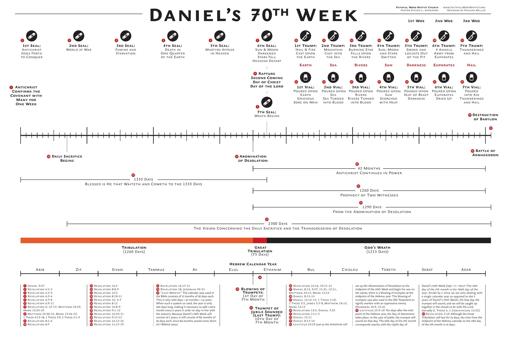
Daniel’s 70th Week · The first half
The covenant, and the first five seals
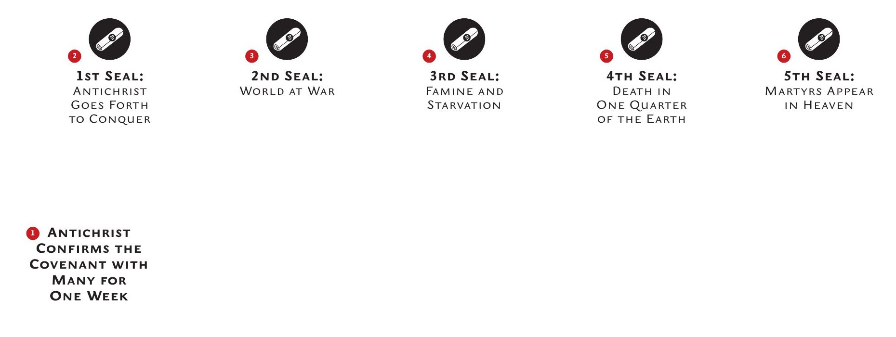
Daniel’s 70th Week · The midpoint
The sixth seal, the rapture, the seventh seal
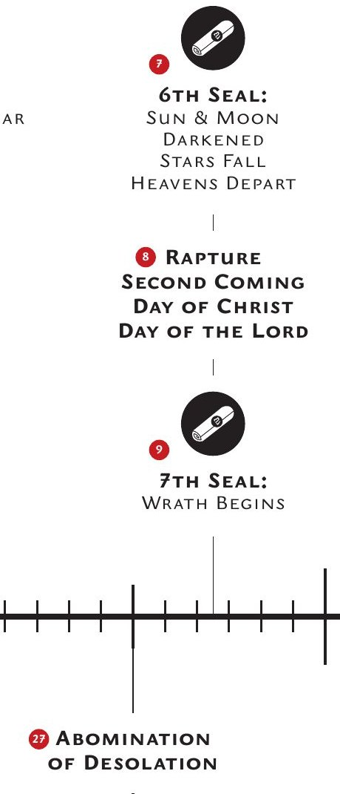
Daniel’s 70th Week · God’s wrath
Trumpets and vials one to four
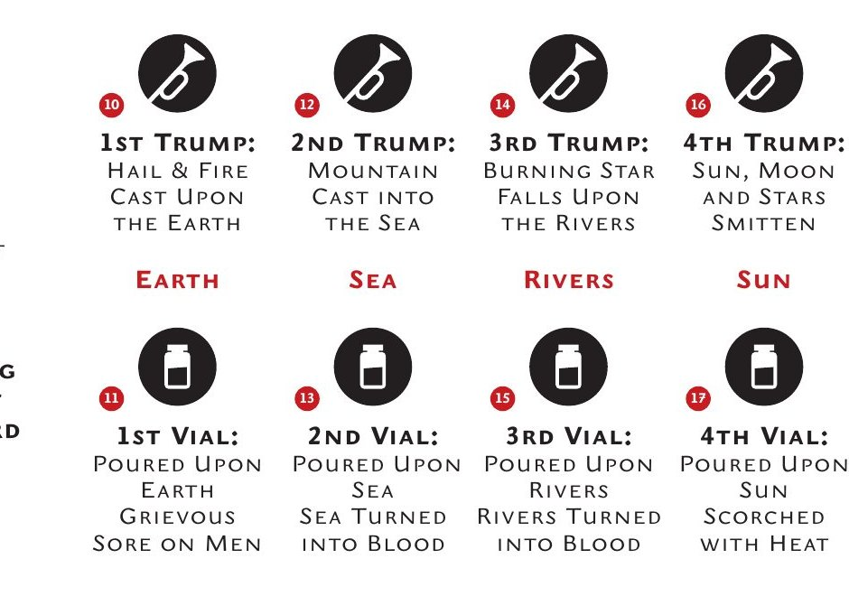
Daniel’s 70th Week · God’s wrath
Trumpets and vials five to seven, Babylon and Armageddon
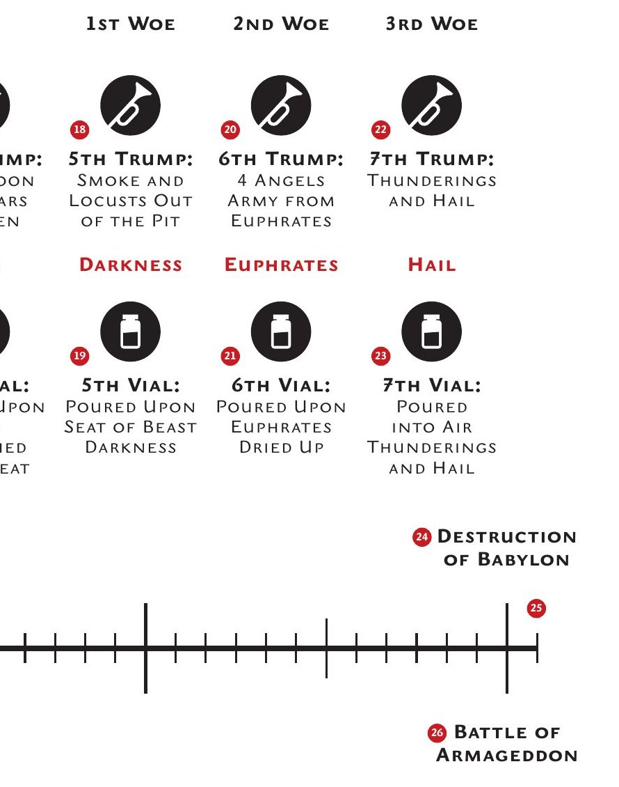
Daniel’s 70th Week · The days
The 1335 days and the 2300 days
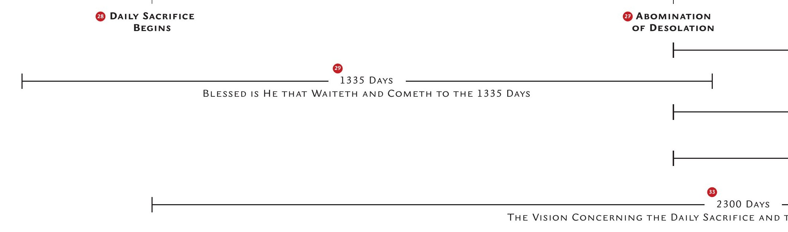
Daniel’s 70th Week · The days
42 months, 1260, 1290 and 2300 days
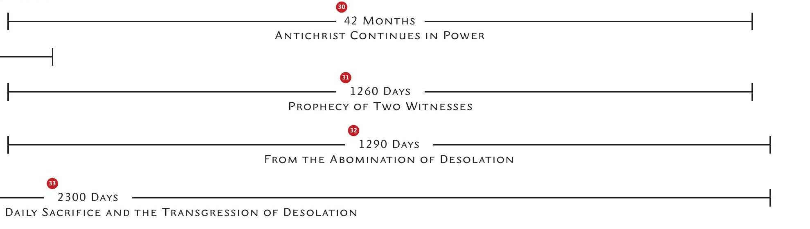
Daniel’s 70th Week · The days
Tribulation, and the first half of the Hebrew year
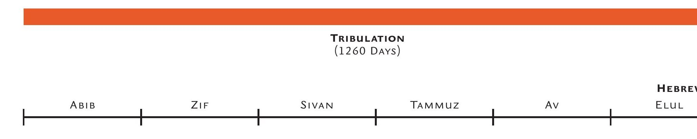
Daniel’s 70th Week · The days
Great Tribulation, God’s wrath, and the second half of the year
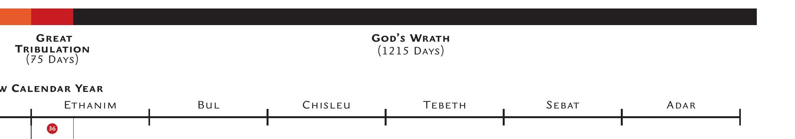
Daniel’s 70th Week · The days
The trumpets of the seventh month
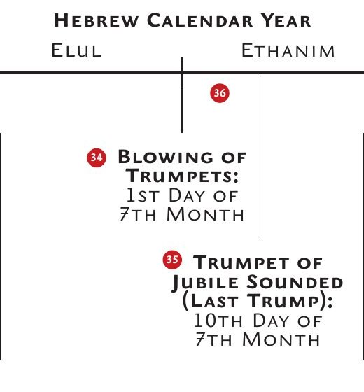
Daniel’s 70th Week · The chart’s notes
The references, numbers 1 to 25
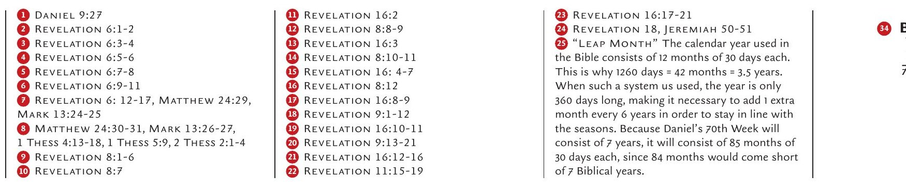
Daniel’s 70th Week · The chart’s notes
The references and notes, numbers 26 to 36
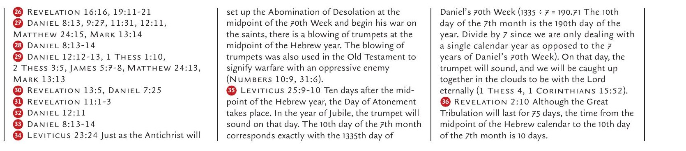
Daniel’s 70th Week, the whole chart
Post-Trib, Pre-Wrath Timeline ↗Timeline of Days in Daniel 8 and 12 ↗After the Tribulation – End Times and Prophecy ↗
Chart: Faithful Word Baptist Church, designed by Richard Miller.